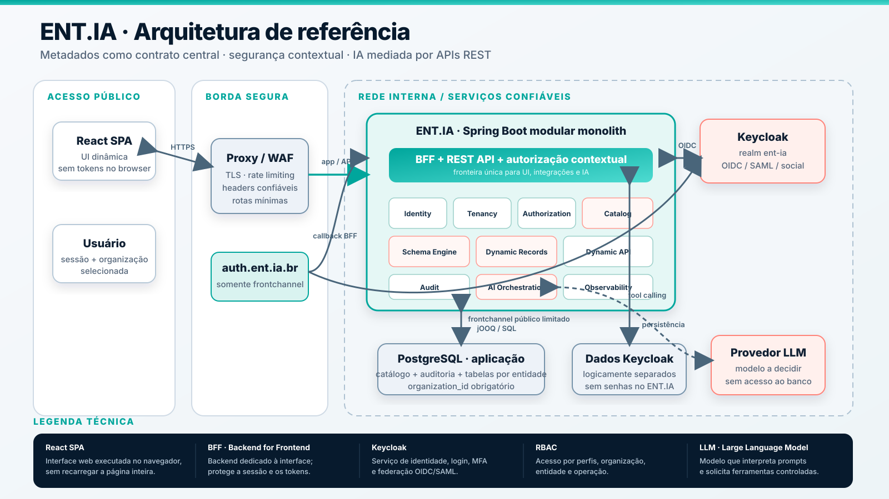

Apresentação conceitual e técnica · viabilidade e aplicabilidade
ENT.IA
Plataforma inteligente para modelagem e personalização de entidades de negócio.
Entidades moldadas ao seu negócio.
Modele entidades. A IA faz o resto.
A ideia em uma página
Transformar entidades configuráveis em aplicações seguras e prontas para operar
1
O que é
Uma plataforma multi-organização que converte metadados em banco, APIs, telas, permissões e auditoria.
2
Onde se aplica
Cadastros e consultas de fornecedores, contratos, ativos, ocorrências e outros dados estruturados.
3
Por que é viável
Arquitetura modular, tecnologias consolidadas e validação incremental das áreas de maior complexidade.
Objetivo desta conversa: validar a aplicabilidade, os fundamentos arquiteturais e a escolha de uma entidade piloto. O projeto está especificado, mas ainda não possui implementação.
O problema
A maior parte do esforço não está na entidade. Está na infraestrutura repetida ao redor dela.
Dados
Schema, migrations, validação, relacionamentos e consultas.
Experiência
Formulários, detalhes, filtros, tabelas e paginação.
Confiança
Login, isolamento, permissões, auditoria e segurança.
Integração
APIs, documentação, identidade e automações inteligentes.
O resultado é tempo de entrega alto, soluções inconsistentes e uma superfície de risco multiplicada.
A proposta
Um catálogo central transforma metadados em uma aplicação operacional
ModelarCampos, tipos, validações, relações e apresentação.
ValidarCompatibilidade, impacto, segurança e integridade.
PublicarSnapshot global, imutável, versionado e auditado.
AtivarTabela física, índices e contrato disponíveis com segurança.
OperarREST, cadastros, consultas e IA usam o mesmo contrato.
Sem geração de código por entidade
Backend e React interpretam JSON Schema e UI Schema em tempo de execução.
Uma fonte de verdade
Persistência, API, interface, autorização e ferramentas da IA seguem a mesma versão ativa.
Aplicabilidade
Onde o ENT.IA é uma boa solução — e onde não pretende competir inicialmente
Bons candidatos
- cadastros de fornecedores e parceiros;
- contratos, licenças e documentos controlados;
- ativos, equipamentos e inventários internos;
- catálogos, tabelas de referência e parâmetros;
- ocorrências, evidências e registros de conformidade;
- backoffices que variam campos conforme o domínio.
Não é o foco inicial
- núcleos transacionais de altíssima frequência;
- BPM e workflows complexos de longa duração;
- data lake, BI ou processamento analítico massivo;
- execução de regras ou código arbitrário;
- schema diferente para cada organização;
- agentes autônomos sem confirmação humana.
Piloto ideal: uma entidade estruturada, com variação de campos, necessidade de controle de acesso, auditoria e consultas recorrentes.
Exemplo ilustrativo
Uma definição de “Fornecedor” vira dados, telas, APIs e interação por prompt
01
Definir
CNPJ, razão social, categoria, status, validações e relacionamento.
02
Persistir
Tabela física própria, com organization_id, índices e constraints.
03
Operar
REST, cadastro, detalhe, filtros e listagem surgem do contrato publicado.
04
Interagir por IA
O usuário consulta e solicita alterações por prompt, sem conhecer endpoints ou o schema físico.
Diferencial competitivo técnico: “Liste fornecedores ativos” gera uma consulta REST autorizada; “Altere a categoria da ACME” gera uma prévia e aguarda confirmação. O mesmo metadado governa dados, interface, acesso e IA.
Gire o celular ou arraste o diagrama horizontalmente

Estratégia de software
Monólito modular: velocidade inicial com limites explícitos de evolução
Identity
Tenancy
Authorization
Catalog
Schema Management
Dynamic Records
REST API / DSL
Audit
AI Orchestration
Observability
Coesão operacional
Uma implantação e transações locais no início.
Fronteiras testáveis
Interfaces públicas, eventos e propriedade de dados por módulo.
Extração por evidência
IA ou jobs podem ser separados quando risco ou escala justificarem.
Dados e evolução
Definição global; ativação segura; dados isolados por organização
Modelo físico escolhido
- PostgreSQL 18.x self-hosted ou gerenciado compatível, com databases separados;
- tabela física por entidade no schema compartilhado;
- PK
(organization_id, id UUIDv7);
- RLS obrigatória como segunda barreira de isolamento;
- credenciais separadas por responsabilidade.
Governança da definição
- versões globais e snapshots imutáveis;
- uma única versão ativa;
- habilitação opcional por organização;
- mudanças destrutivas bloqueadas no MVP;
- drift físico impede nova ativação.
Drafteditável
Validatedhash conferido
Publishedsnapshot imutável
ActivatingDDL idempotente
Activecontrato vigente
Identidade e segurança
A entrada descobre a organização com segurança, aplica sua marca e encaminha ao provedor correto
Provedor da organização
Integração com Microsoft Entra ID, Okta, Keycloak corporativo ou outro provedor OIDC/SAML.
Provedor da plataforma
Se a organização não possuir provedor, o Keycloak do ENT.IA oferece conta, recuperação e MFA.
Login social
Google, Microsoft ou GitHub podem ser habilitados como opções de entrada, conforme a política adotada.
Descoberta sem exposição
A entrada genérica não lista clientes. Domínio inequívoco encaminha diretamente; vínculos individuais somente aparecem após confirmação do e-mail.
Marca e sessão protegidas
A organização aplica tema declarativo antes e depois do login. O BFF mantém tokens no backend; Keycloak e APIs administrativas permanecem internos.
Autorização e auditoria
Toda operação responde a duas perguntas: “pode?” e “como comprovamos?”
RBAC contextual
RBAC · Role-Based Access Control: controle de acesso baseado nos perfis atribuídos ao usuário.
organização × entidade × operação
- perfis por organização;
- união das concessões;
- negação por padrão;
- controle aplicado no backend, inclusive para IA.
- RLS no PostgreSQL como defesa adicional.
Auditoria e evidência operacional
- autoria vinculada à identidade autenticada;
- evento na mesma transação da alteração;
- falha na auditoria reverte a operação;
- sessão, IP, User-Agent e origem correlacionados;
- somente nomes dos campos alterados, sem valores;
- append-only e sem expurgo automático no MVP.
Não-repúdio: capacidade de associar uma ação ao seu autor e produzir evidências que dificultem sua negação posterior. O MVP entrega rastreabilidade transacional, mas não alega não-repúdio criptográfico nem detecção de alterações feitas por administradores privilegiados.
IA na prática
O usuário pede em linguagem natural; o ENT.IA executa como uma operação comum
Consulta
“Liste os fornecedores ativos de São Paulo.”
A IA usa a ferramenta de consulta REST autorizada e devolve um resultado limitado aos campos e registros permitidos.
Alteração
“Mude a categoria da ACME para Estratégico.”
Pré-visualização: Fornecedor ACME
Categoria: Regular → Estratégico
Aguardando confirmação do usuário.
O que acontece nos bastidores
- Contextualiza: identifica usuário e organização pela sessão segura.
- Seleciona: oferece à LLM somente ferramentas REST permitidas.
- Protege: aplica RBAC e mascara ou bloqueia campos sensíveis.
- Confirma: exige aceite humano antes de criar, alterar ou excluir.
- Executa e registra: a API revalida tudo e grava a auditoria correlacionada.
Regra simples: consultas autorizadas podem ser automáticas e limitadas; qualquer alteração exige pré-visualização e confirmação. A LLM nunca acessa diretamente o banco.
API de entidades · DSL + AST
A consulta é declarada em JSON, validada como árvore e executada sem SQL livre
1 · O consumidor envia a DSL
POST /api/v1/entities/fornecedor/records/query
{
"select": ["razaoSocial", "status"],
"filter": {
"logic": "and",
"conditions": [
{"field":"status", "operator":"eq", "value":"ATIVO"},
{"field":"razaoSocial", "operator":"ilike", "value":"ACME%"}
]
},
"order": [{"field":"razaoSocial", "direction":"asc"}],
"page": {"limit":50}
}
2 · O backend constrói e valida a AST
AND
status
eq “ATIVO”
razaoSocial
ilike “ACME%”
- catálogo valida campo, tipo, operador e capacidade;
- RBAC valida organização, entidade e operação;
- limites controlam profundidade, condições e página;
- jOOQ gera SQL parametrizado; RLS reforça o isolamento.
React · integração · IA
API da entidade
DSL → AST validada
jOOQ parametrizado
PostgreSQL + RLS
items + meta + cursor
Resultado: uma linguagem expressiva para telas e IA, mas limitada pelo catálogo, permissões, perfis de índice e tempo máximo de execução.
Stack tecnológica proposta
Tecnologias maduras, alinhadas à experiência da equipe e com preferência por ecossistema aberto
| Camada | Tecnologias | Papel |
|---|
| Backend | OpenJDK 25 LTS · Spring Boot 4.1 · Spring Modulith · Spring Security | Monólito modular, BFF, domínio e segurança |
| Dados | PostgreSQL 18.x · jOOQ · Liquibase* | RLS, integridade, DSL parametrizada e migrations estáticas |
| Frontend | React 19 · TypeScript · Vite · MUI · TanStack · React Hook Form | SPA, renderer, formulários e consultas dinâmicas |
| Identidade | Keycloak · OIDC · SAML | Conta da plataforma, federação, MFA e login social |
| Borda e infraestrutura | Nginx OSS · Containers OCI · Docker Compose · OpenTofu | Entrada segura e implantação portável por camadas |
| IA | Spring AI* · provedor LLM a definir | Orquestração de ferramentas sobre a API REST |
| Qualidade | Maven · Testcontainers · Vitest · RTL · Playwright | Build e testes em múltiplas camadas |
* Decisões condicionais: a versão do Liquibase depende da revisão de licença; Spring AI e o provedor LLM serão confirmados por prova técnica. O motor de schema dinâmico é próprio.
Stack tecnológica · visão complementar
O papel de cada tecnologia na solução
Backend e identidade
- OpenJDK 25 LTS
- Runtime Java estável para o backend.
- Spring Boot
- Base da aplicação, APIs REST e configuração.
- Spring Modulith
- Define e testa os limites do monólito modular.
- Spring Security
- Protege sessões, endpoints e integração OIDC.
- Keycloak
- Login, MFA, federação corporativa e login social.
Dados e contratos
- PostgreSQL 18.x
- Self-hosted ou gerenciado compatível, com RLS e tabelas por entidade.
- jOOQ
- Converte a DSL validada em SQL parametrizado.
- Liquibase*
- Evolui somente o schema estático da plataforma.
- JSON Schema
- Contrato de campos e validações interpretado em runtime.
- OpenAPI
- Documenta a REST API e define ferramentas permitidas à IA.
Frontend e IA
- React + TypeScript
- Interface dinâmica com tipagem e componentes reutilizáveis.
- Vite + MUI
- Build rápido e base visual consistente.
- TanStack Query / Table
- Estado remoto, cache, filtros e tabelas dinâmicas.
- React Hook Form
- Estado e validação dos formulários gerados.
- Spring AI*
- Candidato para modelos, prompts e ferramentas REST.
Implantação e qualidade
- Nginx OSS
- Serve o React e encaminha API e frontchannel de login.
- OCI + Docker Compose
- Containers portáveis e implantação inicial por host.
- OpenTofu
- Infraestrutura como código agnóstica de provedor.
- Kubernetes
- Adiado; compatibilidade preservada para evolução futura.
- Maven + Testcontainers
- Build Java e testes com infraestrutura real.
- Vitest · RTL · Playwright
- Testes unitários, de componentes e ponta a ponta.
Caminho de validação técnica
Cada etapa demonstra uma capacidade real antes de ampliar o escopo
| Etapa | Evidência prática | O que comprova |
|---|
| 0 · Detalhar | REST/DSL, RLS, convenções físicas e ciclo de schema documentados; pendências classificadas | Arquitetura coerente e requisitos testáveis |
| 1 · Fundação | Login, duas organizações e perfis com tentativas de acesso cruzado | Identidade, isolamento e autorização |
| 2 · Núcleo dinâmico | Modelar e ativar “Fornecedor”; tabela, REST e UI disponíveis | Ciclo de metadados ponta a ponta |
| 3 · IA controlada | Consultar e propor alteração com preview, confirmação e auditoria | Utilidade sem caminho privilegiado |
| 4 · Capacidade | 20 organizações, tabela com 1 milhão de linhas, 100 usuários virtuais e 30 RPS sustentados | Desempenho com RLS e auditoria ativos |
| 5 · Piloto real | Operar uma entidade real com usuários e métricas observáveis | Aplicabilidade e operação |
Metas p95 no backend: ID até 300 ms · filtro simples até 500 ms · consulta composta até 1 s · mutação com auditoria até 750 ms. São critérios do MVP, não SLA.
Riscos reconhecidos · validação técnica
Os controles estão definidos; sua eficácia e o risco residual precisam ser demonstrados
Vazamento entre organizaçõesControle: contexto confiável, negação padrão, RLS obrigatória e testes cruzados.
DDL em tabelas grandesControle: vocabulário fechado, análise de impacto, execução por fases e benchmark de locks.
Consultas dinâmicas carasControle: AST limitada, perfis de índice, paginação por cursor e timeout de cinco segundos.
Complexidade do schema engineControle: planos imutáveis, locks, diário idempotente, pre/pós-condições e testes reais.
Prompt injection e excesso de autonomiaControle: allowlist, minimização, confirmação humana e autorização repetida na REST API.
Auditoria no mesmo bancoControle inicial: gravação atômica, privilégios mínimos, origem rastreável e monitoramento do crescimento sem expurgo automático; detecção criptográfica permanece futura.
Discussão ainda aberta: quais evidências, responsáveis e níveis de risco residual serão aceitos? Controles definidos reduzem risco, mas não substituem testes de segurança, carga e recuperação.
Provas práticas de viabilidade
Como saberemos que o conceito funciona?
1
Configurar
Cenário: um administrador modela “Fornecedor”.
Esperado: tabela, REST e telas ficam disponíveis sem código específico.
2
Isolar
Cenário: um usuário da Organização A tenta acessar dados da B.
Esperado: acesso bloqueado e tentativa registrada na auditoria.
3
Evoluir
Cenário: uma ativação de schema falha.
Esperado: a versão anterior permanece ativa e a operação pode ser retomada.
4
Conversar
Cenário: a IA recebe um prompt para alterar um registro.
Esperado: prévia, confirmação, autorização e auditoria antes da mudança.
Critério de sucesso: esses cenários devem funcionar de forma repetível e observável com uma entidade piloto e duas organizações de teste.
Alinhamentos técnicos
O que já está consolidado — e o que falta alinhar para a prova executável
Fundação consolidada
- monólito modular e stack proposta;
- PostgreSQL 18.x, tabela por entidade e RLS²;
- REST, DSL, AST, limites e cursor opaco;
- login identity-first, white-label declarativo e Keycloak;
- RBAC e auditoria append-only, transacional e rastreável;
- guardrails e metas de capacidade do MVP;
- containers OCI, Docker Compose e OpenTofu.
Detalhar na próxima etapa
- entidade, organização e casos de uso do piloto;
- segredos, backup, recuperação, RPO/RTO e SLOs¹ de produção;
- versão/licença Liquibase e provedor de LLM.
- exportações e relatórios ficam para uma fase futura.
Legendas: ¹ SLO · Service Level Objective: meta mensurável de disponibilidade, latência ou erros. ² RLS · Row-Level Security: regras do PostgreSQL que restringem quais linhas cada contexto pode consultar ou alterar.
ENT.IA
Entidades moldadas ao seu negócio.
Governança incorporada.
IA sob controle.
Próximo passo proposto: selecionar a entidade piloto e definir os critérios objetivos de sucesso.